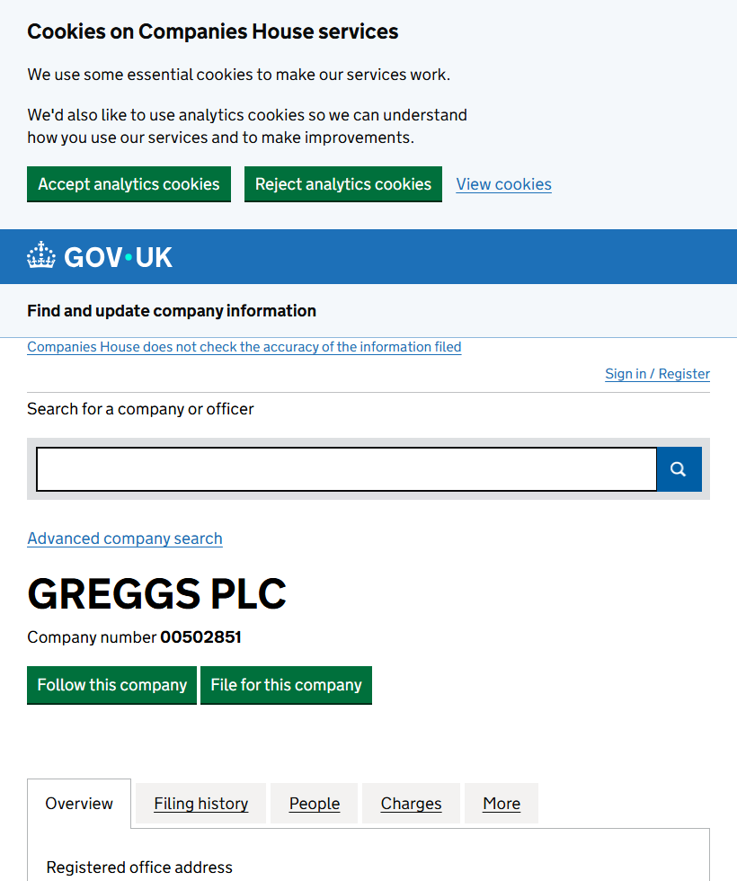

Companies House · UKRead 9 Nov 2026, 08:40 UTC
Active
The register says “Active”
GREGGS PLC 00502851
- Company type
- Public limited Company
- Incorporated on
- 29 December 1951
- Registered office
- Greggs House, Quorum Business Park, Newcastle Upon Tyne, NE12 8BU

Companies House · read 9 Nov 2026, 08:40 UTC · Fetch · live · source ↗